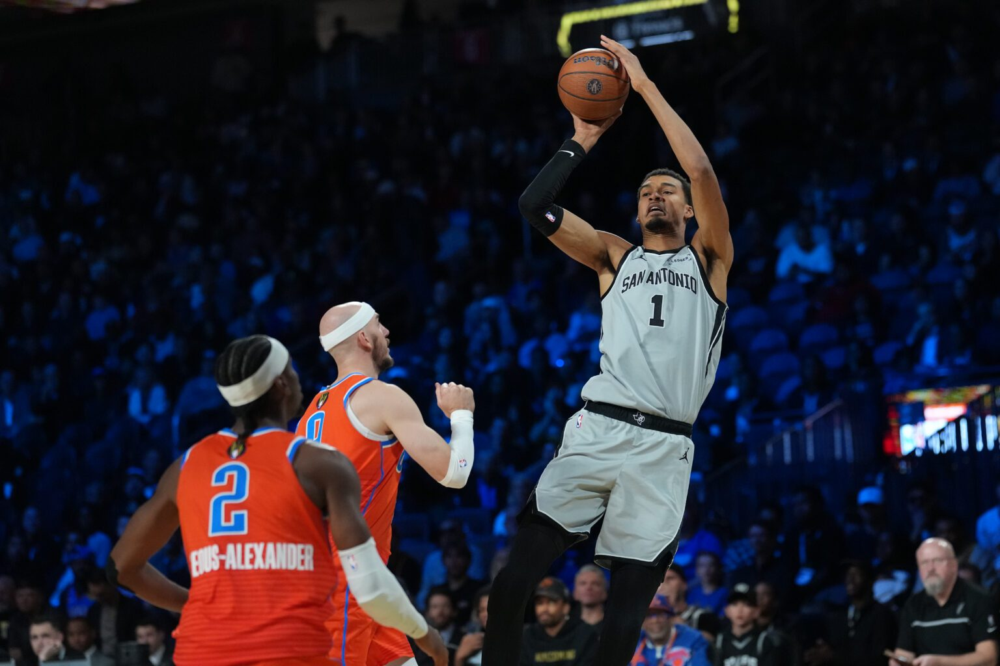
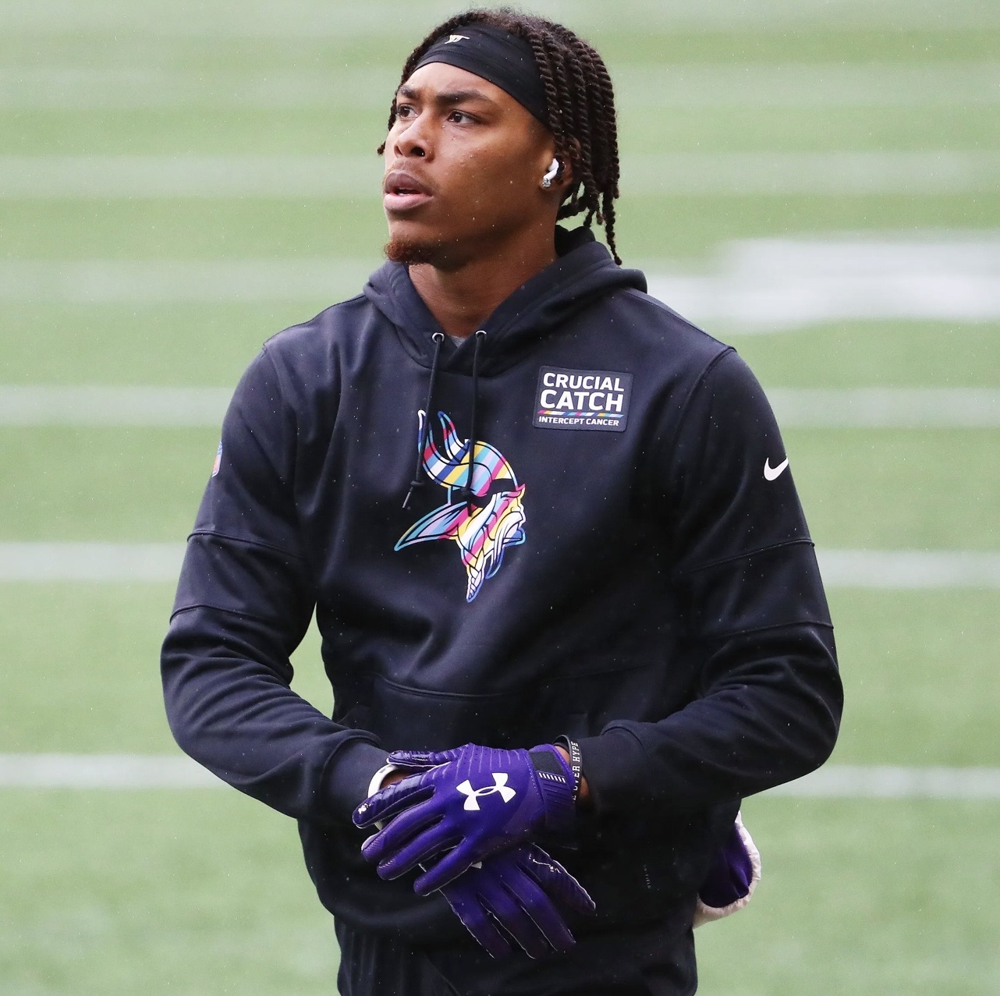
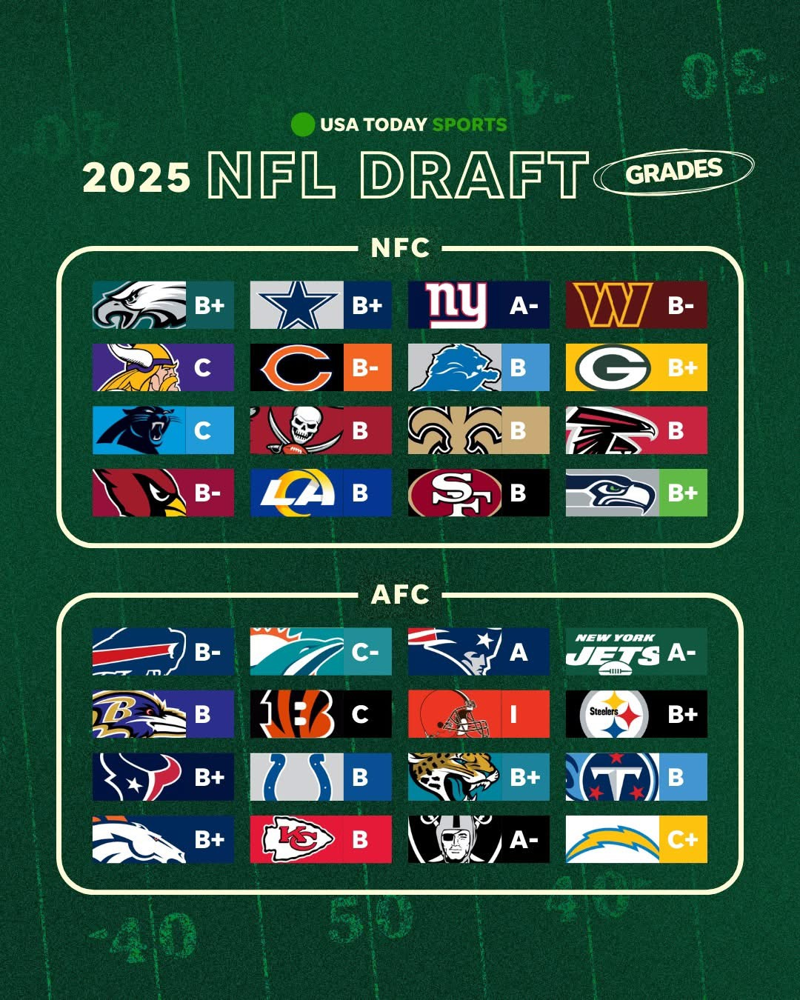

NBA Awards
The Case For
The Case For
Youngest NBA MVP Ever
Why not? The Wemby Era is inevitable, this is the start.
Read Full Story
 Warriors
Warriors
 Rockets
Rockets

 Hornets
Hornets
 Bucks
Bucks

 Wolves
Wolves
 Mavs
Mavs
 Lakers
Lakers
 Suns
Suns
A Series By
Rev's Hoop Sermon
Might Be Time For a Coaching Change In Minnesota

Reclaiming WR1: The blueprint for Justin Jefferson's 2026 redemption.
Stream Starts April 18 • 2:00 PM ET

Stream Starts April 18 • 1:00 PM ET

Starts April 26 • 2:30 PM ET
From Kinetic Chain to movement science
A deeper dive.
Analytics, Breakdowns and More

Why not? The Wemby Era is inevitable, this is the start.
Read Full StoryAfter a down season, Justin Jefferson's spot as a top 3 WR is in question. He's on a mission to reclaim Leauge WR-1.
Read Full Story